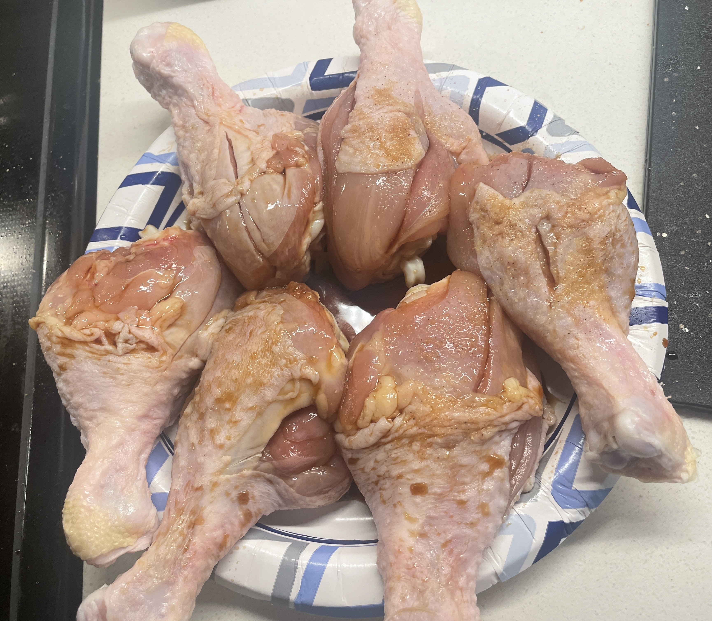
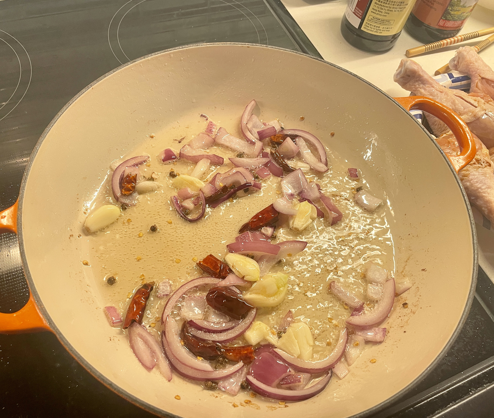

Chicken Drumsticks

Chicken Drumsticks is a traditional Chinese food.
The taste is salty and spicy, mainly made of chicken, onion, ginger, garlic and chili.
Ingredients
- 400g chicken thighs+ 10g onion+ 10g garlic+ 10g ginger+ 10g chili

- 2tablespoon oyster sauce+ 3tablespoon soy sauce

Cooking Steps
- Slice the onion, ginger, garlic and chili into the pot.

- Put the chicken thighs in the pot and pour in the soy sauce and oyster sauce.

- Add an appropriate amount of warm water, bring to a boil, simmer over medium heat, and finally add salt.